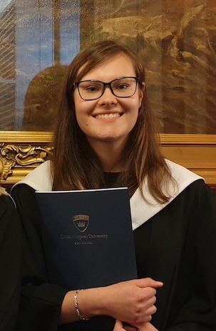

|  |
Agne Zainyte
|
Currently studying MSc Artificial Intelligence
|
BSc (Hons) Human Biology graduate
|
| Contact Me |
|
About me
I am currently studying MSc Artificial Intelligence. My undergraduate studies specialised in Human Biology and my final honours project specialised in neuroscience subject.
My biggest interest was cognitive neuroscience and after finishing my life science degree I decided to expand my knowledge by studying state-of-art technology of AI with a particular interest in cognitive computing.
Education
| Year |
University |
| 2019-2021 |
|
| 2015-2019 |
|
Skills
| Programming languages |
| Java |
⭐ ⭐ ⭐ ⭐ ⭐ |
| Python |
⭐ ⭐ ⭐ |
| C++ |
⭐ |
| JavaScript |
⭐ |
| SQL |
⭐ |
| Python Libraries |
| Pandas |
⭐ ⭐ ⭐ |
| NumPy |
⭐ ⭐ |
| Scikit-learn |
⭐ ⭐ |
I am efficient in advanced concepts of Java, such as design patters and concurrent programming.
I have intermediate knowledge of object oriented and functionl Python.
Currently I am studying data management using Pandas and Machine Learning techniques using Python libraries.
I am also studying web development using HTML, CSS, JavaScript, PHP, Bootstrap4 and MongoDB.
Certificates
Interests
One of my greatest interest lies in popular science literature. I believe that in a times when science plays such an enormous part in economy and culture it is necessary that the society would be aware of its driving force. I enjoy reading and
analysing the ways in which science should be popularised without any loss in its accuracy.
I also stay up-to-date with current research in technology field by subscribing to MIT Technology Review website and listening to MIT Artificial Intelligence podcast.
Great influences of my way of thinking are cognitive neuroscientists Michael Gazzaniga, Joseph LeDoux and Antonio Damasio, I believe their work is extremely valuable in better understanding of human mind and brain relationship and perhaps one day
their work will turn out to be applicable in explainable AI (XAI) field.
Other
My skills in biological science:
Standard Operating Procedure (SOP); Qualitative and Quantitative Research Methods; Scientific Analysis; Presentation Skills; Project Management;